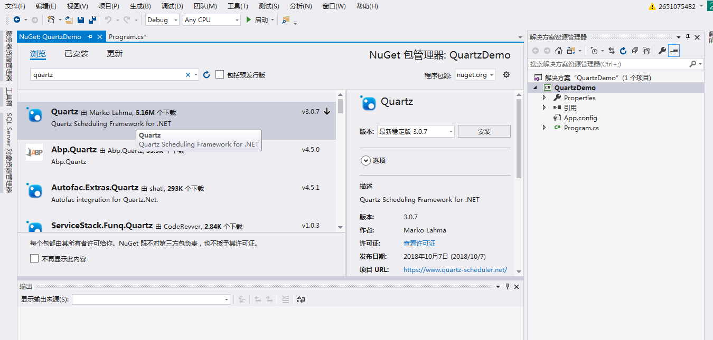
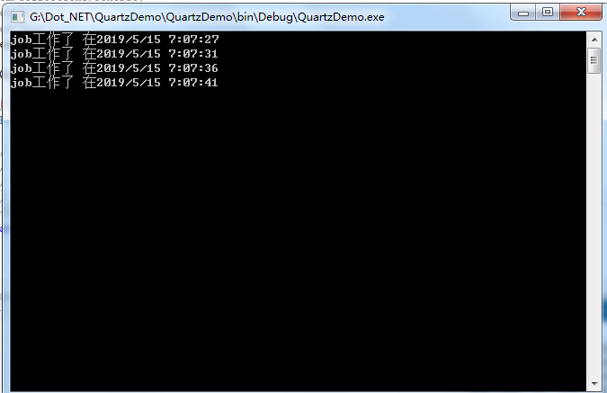

这里讲下，quartz这种任务调度程序的简单使用
这是使用的quartz的3.x 版本
2.x 版本与此稍有区别，可以在网上查看2.x版本教程
使用语言为c#
quartz的使用分为几个步骤
其中2步骤也可以放到步骤5后面
另外，别忘记在nuget管理器中引入quartz

代码如下
class Program
{
/// <summary>
/// 入口程序
/// </summary>
/// <param name="args"></param>
static void Main(string[] args)
{
Run();
Console.ReadKey();
}
/// <summary>
/// 任务调度的使用过程
/// </summary>
/// <returns></returns>
public async static Task Run()
{
// 1.创建scheduler的引用
ISchedulerFactory schedFact = new StdSchedulerFactory();
IScheduler sched = await schedFact.GetScheduler();
//2.启动 scheduler
await sched.Start();
// 3.创建 job
IJobDetail job = JobBuilder.Create<SimpleJob>()
.WithIdentity("job1", "group1")
.Build();
// 4.创建 trigger
ITrigger trigger = TriggerBuilder.Create()
.WithIdentity("trigger1", "group1")
.WithSimpleSchedule(x => x.WithIntervalInSeconds(5).RepeatForever())
.Build();
// 5.使用trigger规划执行任务job
await sched.ScheduleJob(job, trigger);
}
}
/// <summary>
/// 任务
/// </summary>
public class SimpleJob : IJob
{
public virtual Task Execute(IJobExecutionContext context)
{
return Console.Out.WriteLineAsync($"job工作了 在{DateTime.Now}");
}
}
运行程序，效果图如下：
每5秒执行一次

另外，在实际项目使用中，可以进行把上面步骤拆开，封装进行使用
例如，可以把步骤1，步骤2封装到一起，即用来产生 scheduler
把 步骤3，步骤4，步骤5 封装到一起，用来给不同的任务 scheduler（相当于注册不同的 job ，trigger）
另外，还有更多的quartz的用法
这里附上继续学习网址：